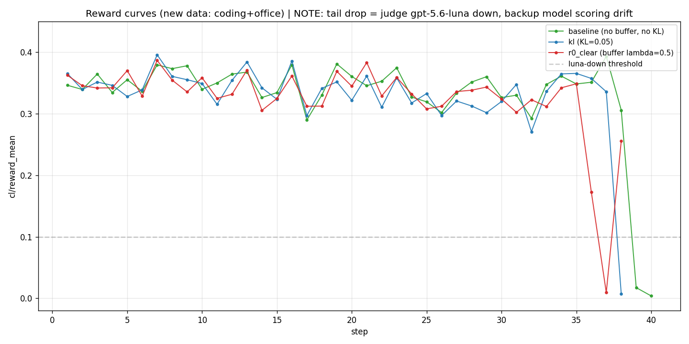
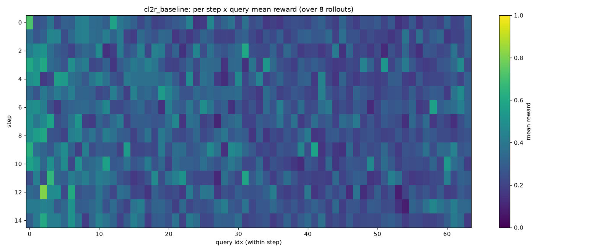

Keep learning new tasks while retaining old abilities — replay and policy constraints on top of GRPO.
When an agentic LLM is trained on a stream of tasks, reinforcement learning on new tasks tends to erode its ability on earlier ones — catastrophic forgetting. This project builds a continual RL system over agentic LLMs: on top of standard GRPO, it adds an experience replay buffer and policy constraints so the model keeps improving on new tasks while mitigating forgetting. The system uses capability-bucketed replay, token-level U-shaped block weighting, and an entropy term to guard against diversity collapse, all injected into verl without forking. Forgetting is measured on a held-out ClawEval suite across a staged Phase 1--4 experiment matrix.
A composite continual-learning objective, built modularly on top of GRPO.
Experience is bucketed by capability/domain (not difficulty); eviction stays within a bucket, and priority uses an anti-forgetting signal rather than raw reward — so rare-but-important abilities are not squeezed out.
Replay tokens are weighted by priority × a U-shaped block weight (high at the head and tail, low in the middle), clipped and normalized; a continuous hyperparameter degrades gracefully to uniform weighting.
A KL term anchors the policy to a reference, limiting how far new-task updates drift and directly curbing the drift that causes forgetting of old-task behavior.
A small entropy regularizer (λ4) stays on throughout training to prevent diversity collapse (Echo Trap) during long continual runs.
Fully decoupled from the training framework.
The replay buffer is a pure-Python module fully decoupled from verl; the custom continual-learning
loss is injected via actor.set_loss_fn with no fork of the framework. Blocks are split by
action boundaries and fall back to fixed-length segmentation when parsing fails. The codebase ships with
~290 CPU unit tests (verl/GPU-gated tests skipped locally).
A staged Phase 1--4 matrix isolates KL and replay, then combines them.


Phase 1 (B1) — pure-RL forgetting baseline
Phase 2 (K1-K5) — KL constraint, isolated
Phase 3 (R0, R3-R6) — replay, isolated
Phase 4 (C1-C4) — KL × replay, combinedGRPO + replay buffer + policy constraints on verl, no fork.
# install
pip install -e ".[dev]"
# CPU unit tests (~290, verl/GPU tests skipped locally)
pytest
# bucket / buffer tests
pytest tests/test_bucket.py -v